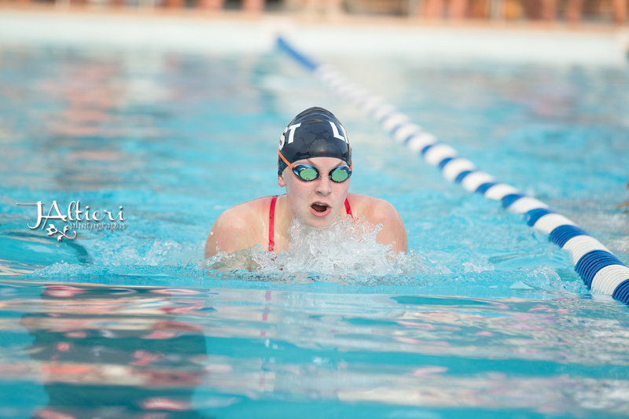
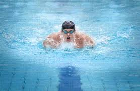

History
Main article: History of swimming
The history of breaststroke goes back to the Stone Age, as for example pictures in the Cave of Swimmers near Wadi Sora in the southwestern part of Egypt near Libya. The leg action of the breaststroke may have originated by imitating the swimming action of frogs. Depictions of a variant of breaststroke are found in Babylonian bas-reliefs and Assyrian wall drawings.
In 1538 Nicolas Wynman, a German professor of languages and poetry, wrote the first swimming book, Colymbetes. His goal was not to promote exercise, but rather to reduce the dangers of drowning. Nevertheless, the book contained a good, methodical approach to learning breaststroke.
In 1696, the French author and poet Melchisédech Thévenot wrote The Art of Swimming, describing a breaststroke very similar to the modern breaststroke. The book (Benjamin Franklin became one of its readers) popularized this technique
Technique
The breaststroke starts with the swimmer lying in the water face down, arms extended straight forward and legs extended straight to the back.

Arm movement
There are three steps to the arm movement: outsweep, insweep, and recovery. The movement starts with the outsweep. From the streamline position, the palms turn out and the hands separate less than shoulder width apart. The outsweep is followed by the insweep, where the hands point down and push the water backwards. The elbows stay in the horizontal plane through the shoulders. The hands push back until approximately the vertical plane through the shoulders. At the end of the insweep the hands come together with facing palms in front of the chest and the elbows are at the side at the body. In the recovery phase, the hands are moved forward again into the initial position under water. The entire arm stroke starts slowly, increases speed to the peak arm movement speed in the insweep phase, and slows down again during recovery. The goal is to produce maximum thrust during the insweep phase, and minimum drag during the recovery phase.
As a variant, it is possible to recover the arms over water. This reduces drag, but requires more power. Some competitive swimmers use this variant in competition.
Another variant is the underwater pull-down, similar to the push phase of a butterfly stroke. This stroke continues the insweep phase and pushes the hands all the way to the back to the sides of the hip. This greatly increases the push from one stroke, but also makes recovery more difficult. This style is well suited for underwater swimming. However, FINA allows this stroke only for the first stroke after the start and each turn. In late 2005, FINA has also introduced a new rule which allows you to perform a single downward kick after the push off the wall.
Leg movement
The leg movement, colloquially known as the "frog kick" or "whip kick",[1] consists of two phases: bringing the feet into position for the thrust phase and the insweep phase. From the initial position with the legs stretched out backward, the feet are moved together towards the posterior, while the knees stay together. The knees should not sink too low, as this increases the drag. Then the feet point outward in preparation for the thrust phase. In the thrust phase, the legs are moved elliptically back to the initial position. During this movement, the knees are kept together. The legs move slower while bringing the legs into position for the thrust phase, and move very fast during the thrust phase. Again, the goal is to produce maximum thrust during the insweep phase, and minimise drag during the recovery phase. In the recovery phase the lower leg and the feet are in the wake of the upper leg, and the feet are pointed to the rear. In the thrust phase all three parts create their own wake, and the flat end of the feet acts like a hydrofoil aligned to give maximum forward thrust. The resulting drag coefficient (or more precisely the frontal area) is thus doubled in the thrust phase.
A fit adult creates a wake. Drag due to a wake is Newtonian drag, increasing with the square of the velocity. For example if the relative speed between the water and the leg is twice as high on the thrust phase than on the recovery phase, the thrust is four times as high as the drag. Assuming the legs are recovered with a relative speed between leg and body which amounts to the same as the relative speed between water and body, the legs must be kicked back with five times the mean velocity of the swimmer. This limits the top speed. Both effects together, velocity and frontal area, yield a thrust-to-drag ratio of 8 for the legs.
As a variant, some swimmers move the knees apart during the preparation phase and keep them apart until almost the end of the thrust phase. Moving both knee and foot outwards like a real frog avoids the extreme rotation in the lower leg.
All other variants fail to increase the frontal area, yet swimmers using them still generate some thrust by the velocity variation and do not drown. Another variant of the breaststroke kick is the scissor kick, however, this kick violates the rules of the FINA as it is no longer symmetrical. Swimming teachers put a great effort into steering the students away from the scissor kick. In the scissor kick, one leg moves as described above, but the other leg does not form an elliptical movement but merely an up-down movement similar to the flutter kick of front crawl. Some swimming teachers believe that learning the front crawl first gives a higher risk of an incorrect scissor kick when learning breaststroke afterwards.
Breaststroke can also be swum with the dolphin kick in butterfly, but this also violates the FINA rules. One kick is allowed, however, at the start and at the turn, providing that it is part of the body's natural movement.
The harmonic movements of the dolphin kick and flutter kick are in contrast to the breaststroke whip kick, which really deserves the name kick. Scissor kick and frog kick are intermediate. Humans have strong muscles in the legs and would need swim fins (like a frog) to bring all their power into the water and stand with the sole of the feet on the water. Rather the leg grabs almost as much water as the foot and a small amount of water is accelerated to high kinetic energy, but not much impulse is transferred. The toes are bent, the feet point 45° outwards, the sole points backwards, to mimic a hydrofoil. While closing in a V shape to the rear a small “lifting” force can be felt. Unlike in the other kicks, the joints are moved into extrema. Before the kick the knee is maximally bent and the upper leg is rotating along its axis to its extreme outer position and the lower leg is twisted to extreme, at the end of the kick the ankles are maximally turned to the inside so that the soles clap together to achieve a nozzle effect like in a jelly fish. Therefore training involves getting flexible in addition to fitness and precision. The sudden sideways stress on knee at the kick can lead to uncomfortable noise and feeling for the beginner and to wear for the senior.